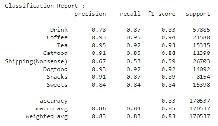
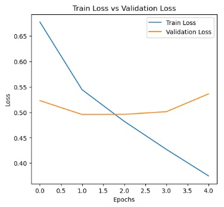
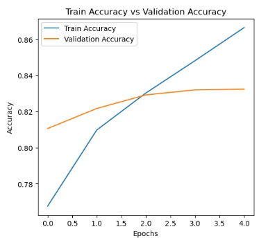

Neural Networks
Classification
Project Description and Questions
The purpose of this project was to take a dataset of food reviews an classify them into categories using Neural Networks. After establishing this model, it can be seen that it classifies the products based off the LDiA topics moderately well as it has an accuraccy of around 83%. From the graphs, it can also be seen that the model began to start to reach overfitting at epoch 4, so that is why it only ran 4 epochs. In terms of metrics, the Coffee category performed the best with an F1 score of 0.95 and the Shipping(Nonsense) category performed the worst with an F1 score of 0.59. This is likely due to the Shipping(Nonsense) category being used as a miscellaneous set by the model. What is also interesting is that the metrics do not necessarily become better for the more entries per category. In order to improve this project, the dataset should have a labeled category section predefined because the LDiA classification is just an approximation and not 100% accurate to the actual product categories. Since that was the only way to get product categories though, we had to use it.
How effective is the CNN at performing multi-label classification on Amazon reviews? The CNN was moderately effective at performing the multi label classification on the Amazon reviews. Since there was no product categorical variable as mentioned in the instructions, we defined our own using the LDia from the previous assignment. Overall the model performed moderately well with an accuracy of 83% and that average is being brought down significantly by the Shipping(Nonsense) category. While this is not great, it is better than random assignment. What preprocessing steps improve CNN performance? Removing stopwords, tokenizing the data and padding improve CNN performance. By removing stopwords and tokenizing the data prior to analysis, the algorithm only has to analyze the relevant data for the CNN. Additionally, padding allows for equal analysis of all words since each word gets analyzed the same amount of times with padding. Do different CNN kernel sizes and pooling methods enhance pattern recognition in product categories? By varying the kernel size of a CNN, different amounts of words are able to be analyzed at a time. However, increasing the kernel size also will reduced the dimension of the data after pooling. While this is generally a good thing, too large of a kernel can lead to an ineffective model. When effectively used, these methods allow for dimension reduction that makes it easier for the CNN model to identify key features in the data without having to analyze the noise.(Geeks for Geeks)
Which categories are challenging to classify, and why? The Shipping(nonsense) category value scores are more challenging to classify since this is an abstract categorization that seems to just bin all the products that could not fit into one of the other main topics. Therefore, this category does not mean much in the overall sense of the data. How does the CNN compare to baseline models like Logistic Regression for multi-label classification? Unlike other models, CNNs take into account the order of data, so this allows for greater depth in classification. The caveat, though, is that these models often times take longer to run. Additionally, models like Logistic Regression are only designed to do binary classifications, so multi class logistic regressions would involve multiple logistic regressions. (Sucky)
Source Code
# Data from Kaggle: https://www.kaggle.com/datasets/snap/amazon-fine-food-reviews/data
!pip install kaggle
!kaggle datasets download -d snap/amazon-fine-food-reviews
! unzip amazon-fine-food-reviews.zip
# import libraries
import os
import pandas as pd
from sklearn.model_selection import train_test_split
from tensorflow.keras.preprocessing.text import Tokenizer
from tensorflow.keras.preprocessing.sequence import pad_sequences
from tensorflow.keras import models, layers
import tensorflow as tf
import numpy as np
# lists to store the data
texts = []
labels = []
csv_path = 'Reviews.csv'
# Read csv into df
df = pd.read_csv(csv_path)
#print(df.columns)
# Select the columns
df = df[['Text', 'ProductId']]
print(df.head())
df.to_csv('amazon-fine-food-reviews-processed.csv', index=False)
from sklearn.feature_extraction.text import TfidfVectorizer
import nltk
nltk.download('punkt')
from nltk.tokenize import word_tokenize, sent_tokenize
tfidf_vectorizer = TfidfVectorizer(max_df=0.15, min_df=2, stop_words="english")
model = tfidf_vectorizer.fit_transform(df.Text)
model
from sklearn.decomposition import NMF
nmf = NMF(beta_loss='frobenius', init=None, l1_ratio=0.0, max_iter=200,
n_components=8, random_state=42, shuffle=False, solver='cd', tol=0.0001,
verbose=0).fit(model)
components_df = pd.DataFrame(nmf.components_, columns=tfidf_vectorizer.get_feature_names_out())
for topic in range(components_df.shape[0]):
tmp = components_df.iloc[topic].nlargest(15).index.to_list()
wordlist = []
for word in tmp:
wordlist.insert(0, word)
print(f'THE TOP 15 WORDS FOR TOPIC #{topic}')
print(wordlist)
print('\n')
newCol = tfidf_vectorizer.transform(df.Text)
topics = nmf.transform(newCol)
topicMatches = pd.DataFrame(topics).idxmax(axis=1)
final = pd.concat([df, topicMatches], axis=1)
final.columns = ['Text', 'ProductId', 'Topic']
df = final
# (Allan), (cs95), (garg_ak0109), (Kohli), (Pandas.Dataframe.groupby), (Pandas.Dataframe.join)
grouped_df = df.groupby(['ProductId'])
grouped_df = grouped_df.agg(pd.Series.mode).reset_index()
grouped_df = grouped_df[['ProductId', 'Topic']]
grouped_df['new_column'] = [l[0] if isinstance(l, np.ndarray) else l for l in grouped_df['Topic']]
grouped_df
df = df[['Text', 'ProductId']]
labeled_df = df.join(grouped_df.set_index('ProductId'), on='ProductId')
labeled_df = labeled_df[['Text', 'ProductId', 'new_column']]
labeled_df.columns = [['Text', 'ProductId', 'Topic']]
df = labeled_df
df.to_csv('amazon-fine-food-reviews-processed-one.csv', index=False)
df1 = pd.read_csv('amazon-fine-food-reviews-processed-one.csv')
# map classes to integers from 0...k-1
df1['targets'] = df1['Topic'].astype('category').cat.codes
df_train, df_test = train_test_split(df1, test_size = 0.3)
MAX_WORDS = 10000
MAX_LEN = 100
print(df_train)
tokenizer = Tokenizer(num_words = MAX_WORDS, oov_token = '')
tokenizer.fit_on_texts(df_train['Text'])
Xtrain = tokenizer.texts_to_sequences(df_train['Text'])
Xtest = tokenizer.texts_to_sequences(df_test['Text'])
Xtrain = pad_sequences(Xtrain, maxlen = MAX_LEN, padding = 'post', truncating = 'post')
Xtest = pad_sequences(Xtest, maxlen = MAX_LEN, padding = 'post', truncating = 'post')
Ytrain = df_train['targets']
Ytest = df_test['targets']
K = df1['targets'].max() + 1
# build model
model = models.Sequential([
layers.Embedding(input_dim = MAX_WORDS, output_dim = 128),
layers.Conv1D(filters = 128, kernel_size = 5, activation = 'relu'),
layers.GlobalMaxPool1D(),
# 64 units (ouput dimension), relu activation
layers.Dense(64, activation='relu'),
layers.Dropout(0.5),
layers.Dense(K, activation = 'sigmoid')
])
# adam -- adjusts the learning rate for each individual parameter -- better at making the model learn
model.compile(
loss = tf.keras.losses.SparseCategoricalCrossentropy,
optimizer = 'adam',
metrics = ['accuracy'])
#Train the Model
history = model.fit(
Xtrain, Ytrain,
validation_data = (Xtest, Ytest),
epochs = 5,
batch_size = 32
)
loss, accuracy = model.evaluate(Xtest, Ytest)
print(f"Test Accuracy: {accuracy * 100:.2f}%")
# add a graph here showing the loss per iteration
#(Solanki)
import matplotlib.pyplot as plt
import numpy as np
def plot_loss_and_acc(history):
train_loss = history.history["loss"]
train_acc = history.history["accuracy"]
val_loss = history.history["val_loss"]
val_acc = history.history["val_accuracy"]
fig = plt.figure(figsize=(12,5))
ax = fig.add_subplot(121)
ax.plot(range(len(train_loss)), train_loss, label="Train Loss");
ax.plot(range(len(val_loss)), val_loss, label="Validation Loss");
plt.xlabel("Epochs"); plt.ylabel("Loss");
plt.title("Train Loss vs Validation Loss");
plt.legend(loc="best");
ax = fig.add_subplot(122)
ax.plot(range(len(train_acc)), train_acc, label="Train Accuracy");
ax.plot(range(len(val_acc)), val_acc, label="Validation Accuracy");
plt.xlabel("Epochs"); plt.ylabel("Accuracy");
plt.title("Train Accuracy vs Validation Accuracy");
plt.legend(loc="best");
plot_loss_and_acc(history)
# F1 score per category
from sklearn.metrics import accuracy_score, classification_report
train_preds = model.predict(Xtrain)
test_preds = model.predict(Xtest)
print("Train Accuracy : {}".format(accuracy_score(Ytrain, np.argmax(train_preds, axis=1))))
print("Test Accuracy : {}".format(accuracy_score(Ytest, np.argmax(test_preds, axis=1))))
print("\nClassification Report : ")
print(classification_report(Ytest, np.argmax(test_preds, axis=1), target_names=['Drink','Coffee', 'Tea', 'Catfood', 'Shipping(Nonsense)','Dogfood', 'Snacks', 'Sweets']))